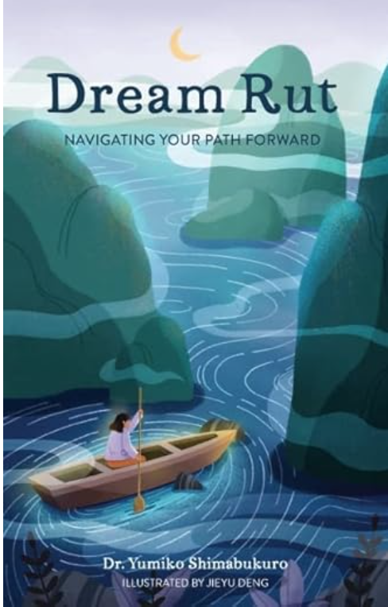

Book: Dream-rut - Navigating your path forward

I began reading "Dream Rut" during a period of severe burnout at work. Yumiko, my graduate school professor at Columbia University, authored the book. I was deeply moved to tears by every word she wrote as they perfectly mirrowed my feelings, struggles, and the realization that I needed a change in my life. A video call with Professor Yumi further prompted me to reflect on what truly mattered to me – pursuing a lucrative finance career or following my passion.
Originally coming to the US for public policy studies to tackle development challenges in underserved communities, I found myself ironically work to help the rich richer. A year later, I made the decision to leave that job and now find myself living out the principles outlined in the book. "You may discover that excitement lies in the smallest of things." "Vulnerability illuminates the path forward." After quiting my job for a month, I am now cherishing each moment, whether it's gradually increasing my running endurance from 2 min to 20min, forming new friendships with people from France, Israel, and India, documenting my experiences on a personal website here at Github, or exploring Chinese and non-Chinese cooking. Previously considered insignificant compared to my work, these activities have brought immense happiness to me.
The book accurately portrayed how I had become disconnected from myself and others, growing cold and seeing my circle of relationships shrink. In a "dream rut," excitement left my voice, I grew quieter, and I concealed my dreams that once brought me joy. These poignant passages made me feel understood and heard.
I almost forgot that I am the girl who used to offer free classes to students in China to ease their financial burdens – a testament to my natural desire to help others. However, I had suppressed this part of myself for some time. Living in New York City, I learned to make calculated decisions like everyone else and shield myself from vulnerability to avoid being taken advantage of. Yet, this approach also distanced many meaningful people from my life. Did they perceive only a partial version of me? The caring, genuine, and curious aspects of myself became obscured in the bustling, competitive city. Now, it's time for me to reconnect with who I truly am.